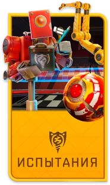
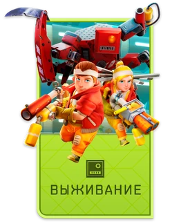
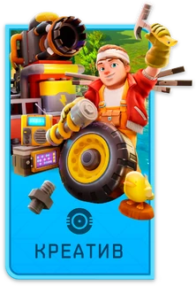

Войдите в творческий рай Scrap Mechanic! Стройте фантастические машины, отправляйтесь в путешествия со своими друзьями и защищайтесь от толп злых фармботов в этой мультиплеерной сурвайвл-песочнице. С мощными инструментами создания Scrap Mechanic, вы можете создать своё приключение!
Игровые режимы:



Некоторые структуры в игре Scrap Mechanic:
Сюжетные структуры:
Упавший корабль. Встречается в начале игры и на некоторых островах. Внутри есть маленький крафтбот, для активации нужна батарея.
Заправка или станция. Встречается возле дорог. Внутри есть маленький крафтбот и бот для создания других ботов. Для активации нужна батарея.
Упаковочная станция. Встречается возле дорог. Нужна для упаковки еды. Есть два типа: брокколи, помидоры, редис, морковь и голубика, ананас, банан, апельсин.
Убежище фермеров. Находится возле первой упаковочной станции в долине между гор.
Склад.
Случайно генерирующиеся структуры:
уины. Встречаются везде. В них можно найти зелёные ящики и сеноботов.
Мини-рынок. Встречается возле дороги. В нём можно найти мешки с землёй, семена, туалетную бумагу, унитазы, а также под унитазами — каменные блоки.
Мини-город. Встречается возле дорог в единственном экземпляре. Состоит из большого количества башен. Здесь находятся зелёные ящики, а также золотые — на крышах.
Химический завод.
Свалка жилых капсул. Яма с водой, куда сбросили жилые капсулы.
Лес сгоревших Фармботов. Вероятно, генерируется один в мире, находится в биоме «Сгоревший лес», является впадиной в рельефе, где обитают 6–8 Фармботов.
Фермерство в Scrap Mechanic — неотъемлемая часть режима выживания, с помощью которого игрок обеспечивает себя пищей на протяжении всей игры.
Чтобы выращивать культуры, нужно положить мешок с почвой на землю так, чтобы он представлял собой квадратный холмик почвы. Затем семена можно высадить в этот холмик, щёлкнув левой кнопкой мыши.
Для роста культур необходим полив. Воду можно собрать из ближайшего водоёма с помощью ведра. Внесение удобрений — необязательный этап, который удваивает скорость процесса роста.
Как только урожай будет готов к уборке, его можно перебирать, в результате чего получится продукт и от 1 до 3 семян. Ананасу и брокколи, в частности, требуется два полива, чтобы расти без внесения удобрений.
Культуры следует сажать рядом с водой, чтобы облегчить их полив. Почву можно полить перед посадкой, хотя увлажнённая почва со временем высохнет, если ничего не было посажено.
Посевы также можно сажать и собирать с помощью вакуумного насоса, а поливать с помощью водомета или вакуумного насоса.
Важно время от времени делать перерыв в фермерстве, хотя бы на одну ночь, чтобы сбросить интенсивность фермерства. Это важно, поскольку увеличение интенсивности фермерства в конечном итоге вызовет рейд, даже без посадки каких-либо дополнительных культур.
Нападение на грядки в Scrap Mechanic происходит из-за посадки слишком большого количества сельскохозяйственных культур на определённой территории. Когда это происходит, появляется предупреждающее сообщение «ОБНАРУЖЕНО НЕСАНКЦИОНИРОВАННОЕ ВЫРАЩИВАНИЕ!» и красный таймер.
Налёт начинается в полночь, когда таймер достигает нуля. Роботы нападают в зависимости от величины урожая:
Если величина небольшая, то приходят боты двух разновидностей: сенобот и грузобот.
Если величина урожая большая, то появляются сильные противники: лентоботы и фармботы.
Чтобы избежать набегов, можно использовать стратегию мини-фермерства: сажать небольшие группы культур на большом расстоянии друг от друга.
Для обороны огорода рекомендуется соорудить хотя бы минимальную защиту, например, ограду из прочных блоков. Также можно построить различные ловушки или другие конструкции: раскрученные пилы и буры, водяные пушки, крутящиеся объекты и взрывные бочки.
В игре Scrap Mechanic мобы есть только в режиме выживания. Некоторые из них:
Враждебные существа:
Фардбот — огромный фермерский робот, мини-босс, с которого падает ключ от склада.
Сенобот — робот для переноски сена и разрыхления почвы, средний противник в режиме выживания, вооружён вилами.
Зелёный грузобот — робот для перевозки грузов, самый слабый бот в игре, обитает в любом биоме.
Лентобот — самый хрупкий из всех ботов, достаточно одного выстрела в голову, чтобы уничтожить его, но наносит огромный урон своими выстрелами.
Красный лентобот — самый хрупкий из всех ботов, наносит огромный урон по области своими выстрелами, бродит на 3 и 4 этажах склада.
Мирные существа:
Вок — мирный моб, питается кукурузой и травой, а также источник мяса и молока.
Глоб — мирный моб, появляется под водой, но может жить на суше, ест картон.
Также в игре есть животные — дружелюбные, пассивные инопланетные существа. К ним относятся, например, пчёлы, мухи, мотыльки, светлячки и бабочки.
Торговец (Trader) в игре Scrap Mechanic — мирный NPC, который меняет ящики овощей и фермеров в клетках на предметы. Позже у него появляются задания.
Место нахождения: торговец всегда находится в горах за овощной упаковочной станцией, спереди ангара.
Будка торговца похожа на заднюю часть машины, которая въехала в ангар. У него есть большая вакуумная помпа для сбора ящиков и фермеров, которые ему привезли.
«Фермер в клетке» — объект в игре Scrap Mechanic.
Некоторые особенности:
Размер клетки — 8×8×8.
Фермеры в клетках не могут быть приварены к таким предметам, как ящики для продуктов, и не могут быть перенесены игроком.
Их можно сдвинуть с места, только надавив на них кувалдой или другим приспособлением, или закрепив их в транспортном средстве, построив вокруг них что-нибудь.
Фермеры в клетках встречаются в кемпингах, обычно группами по 1–3 человека одновременно.
Они возрождаются после 30 игровых дней (12 часов реального времени).
Фермеры в клетках — валюта для «Фермерского убежища».
Обычно фермеры в клетках появляются в сгоревшем лесу или в осеннем лесу, где можно найти хлопок.
Остальная информация есть на сайте
Ссылка
Так как её очень много.
.png)